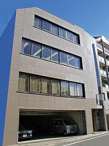

- HOME
- 国内・海外事業所
国内事業所
※表は左右にスクロールして確認することができます。
| 三光化成株式会社 本社 | ||
|---|---|---|
| 住所 | 〒175-0094 東京都板橋区成増1-28-3 » 地図(Googleマップ) |
 |
| TEL | 03-3939-8201（管理部） | |
| FAX | 03-3939-7606 | |
| 事業案内 | 総務・経理などの本社管理機能 | |
| TEL | 03-3939-8121（第１事業部） |
|---|---|
| FAX | 03-3939-5401 |
| 事業案内 | 営業活動、製品設計、生産技術、資材購入の主力拠点となっております。 |
| 朝霞工場 | |
|---|---|
| 住所 | 〒352-0011 埼玉県新座市野火止8-11-6 » 地図(Googleマップ) |
| TEL | 048-477-2331 |
| FAX | 048-481-5973 |
| 事業案内 | 品質保証、購買、製品試作、金型補修整備環境を備えた生産技術の活動拠点 |
| 福島工場 | |
|---|---|
| 住所 | 〒964-0813 福島県二本松市舟形石山3 » 地図(Googleマップ) |
| TEL | 0243-22-3311 |
| FAX | 0243-23-1659 |
| 事業案内 | 小型～中型の成形機を保有し、成形～部品調達～完成品までを行う幅広い業種業態に対応した主力工場 |
| 多治見工場 | |
|---|---|
| 住所 | 〒507-0801 岐阜県多治見市東町3-1-16 » 地図(Googleマップ) |
| TEL | 0572-24-5551 |
| FAX | 0572-24-5523 |
| 事業案内 | 最新の付帯設備を備え、小型～大型までの成形機を保有する中京地区の最新鋭工場 |
| 広島工場 | |
|---|---|
| 住所 | 〒729-0474 広島県三原市沼田西町惣定247番地95 » 地図(Googleマップ) |
| TEL | 0848-86-2312 |
| FAX | 0848-86-1200 |
| 事業案内 | 平成28年11月に広島県三原市に建設した最新の工場 |
| 一関工場 | |
|---|---|
| 住所 | 〒021-0041 岩手県一関市赤荻字鬼吉13-2 » 地図(Googleマップ) |
| TEL | 0191-25-2311 |
| FAX | 0191-25-4425 |
| 事業案内 | 営業活動、生産技術、設備技術、品質保証、購買管理の主力拠点/小型～中型を中心とした成形機を保有し、自働化された設備で精密機構部品を生産する主力工場 |
| 一関第二工場 | |
|---|---|
| 住所 | 〒021-0041 岩手県一関市赤荻字清水139-1 » 地図(Googleマップ) |
| TEL | 0191-25-2303 |
| FAX | 0191-25-2140 |
| 事業案内 | 中型～大型の成形機を保有し、自動車の内装品、外装品を中心に自動車部品の生産に特化した工場 |
| 宮城工場 | |
|---|---|
| 住所 | 〒987-0901 宮城県登米市東和町米川字中島215 » 地図(Googleマップ) |
| TEL | 0220-45-2206 |
| FAX | 0220-45-2750 |
| 事業案内 | 自動車部品およびデジタル機器、メディア関連部品などに対応して外観部品を多く生産する工場。 |
| 弘前工場 | |
|---|---|
| 住所 | 〒036-8326 青森県弘前市大字藤野2-9-5 » 地図(Googleマップ) |
| TEL | 0172-31-2311 |
| FAX | 0172-31-2318 |
| 事業案内 | 小型～大型の成形機を保有し、OA機器等の機構部品を生産する新鋭工場 |
| 花泉工場 | |
|---|---|
| 住所 | 〒029-3205 岩手県一関市花泉町涌津字下三ノ町2 » 地図(Googleマップ) |
| TEL | 0191-82-5166 |
| FAX | 0191-82-5169 |
| 事業案内 | 自動車の重要保安部品である給油口から燃料タンクの樹脂製パイプの組立工場 |
| 金型工場 | |
|---|---|
| 住所 | 〒021-0901 岩手県一関市真柴字小西43-2 » 地図(Googleマップ) |
| TEL | 0191-23-2111 |
| FAX | 0191-21-3130 |
| 事業案内 | CAD・CAE・CAMシステム、最新鋭のMCなど高精度加工を駆使したプラスチック金型の設計、製作専門工場 |
海外現地法人
| 三光化成塑膠（蘇州）有限公司（中国） | |
|---|---|
| 設立年月日 | 1995年4月20日 |
| 資本金 | US$ 5,450,000 |
| 代表者 |
総経理 時 玉泉 |
| 所在地 |
中国江蘇省蘇州市新区珠江路漁洋街2号 (蘇州新区国家高新技術産業開発区内) |
| TEL | (国コード86) 512-6825-3065 |
| 事業案内 | 蘇州市にあり、金型設計から成形、組立までの一貫生産を行う中国主力工場 |
| 三光化成塑膠（大連）有限公司（中国） | |
|---|---|
| 設立年月日 | 2001年10月 |
| 資本金 | JPY 658,936,571 |
| 代表者 | 総経理 佐藤 新一郎 |
| 所在地 |
中国遼寧省大連市大連経済技術開発区東北2街42号 (大連経済技術開発区工業団地内) |
| TEL | (国コード86) 411-8764-3883 |
| 事業案内 | 大連市にあり、金型設計から成形、組立までの一貫生産を行う中国第二の工場 |
| SANKO MEXICO S.A.de C.V.（メキシコ） | |
|---|---|
| 設立年月日 | 2000年3月16日 |
| 資本金 | PESO 51,787,962 |
| 代表者 |
Presidente 田口 諭 |
| 所在地 |
Boulevard Apodaca 600-A Apodaca Technology Park Apodaca N.L.Mexico |
| TEL | (国コード52) 81-8145-0245 |
| 事業案内 | モンテレーに位置し、自動車用成形品を生産する工場 |